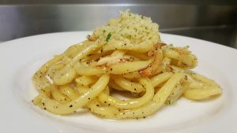

Aglio e Olio

Description
Ingredients
- 1/2 lb dried bucatini pasta
- 1/2 cup thin sliced garlic
- 1 fresh lemon juiced
- 1 cup parsley rough chopped
- 1/4 cup red pepper pepper flake
- 1 cup extra virgin olive oil
- Salt and pepper to taste
Steps
- Bring 1 large pot of salted water to boil.
- Add pasta to boiling water and cook until al dente.
- Add olive oil to a deep saute pan and heat until shimmering.
- Add garlic and red pepper flake to heated oil, fry for 1 minute or until garlic begins to brown.
- Remove from heat, add pasta and 1 cup of pasta water.
- Stir and add parsley, lemon juice, and salt and pepper to taste.
- Serve immediately!